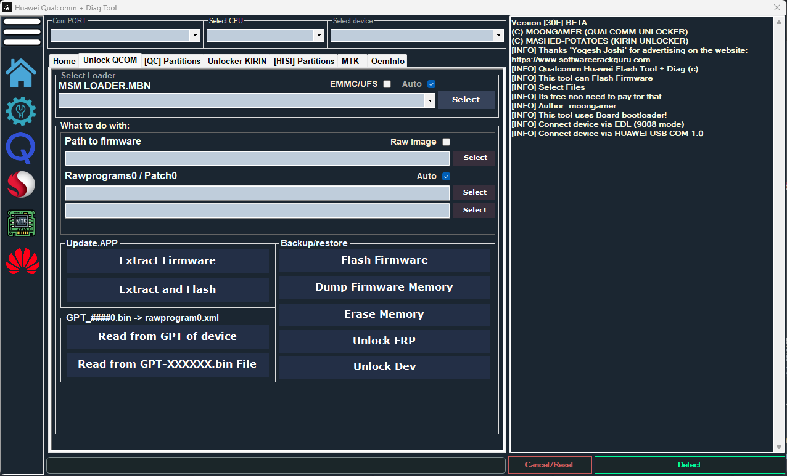
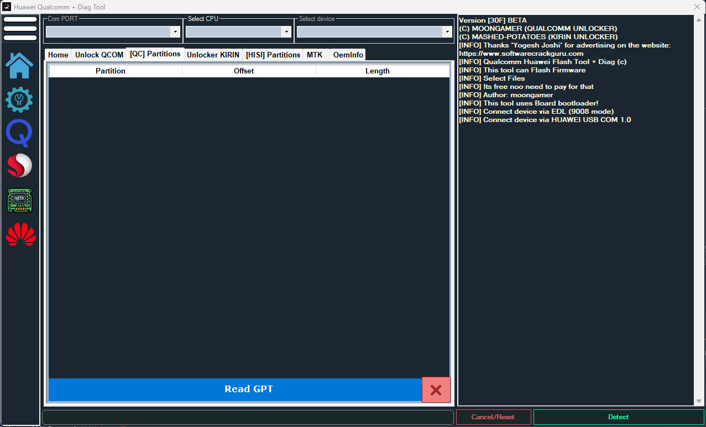
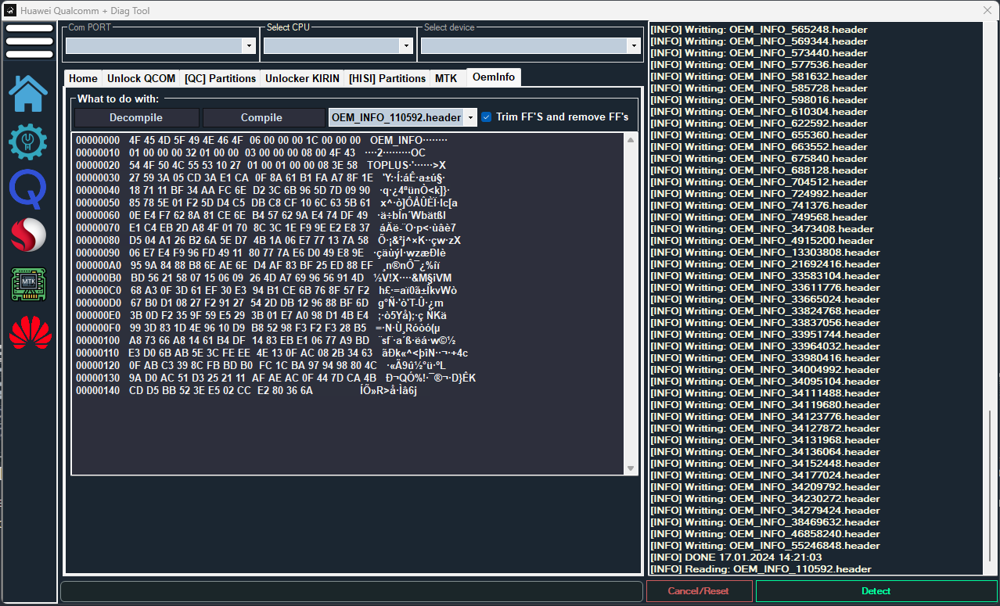
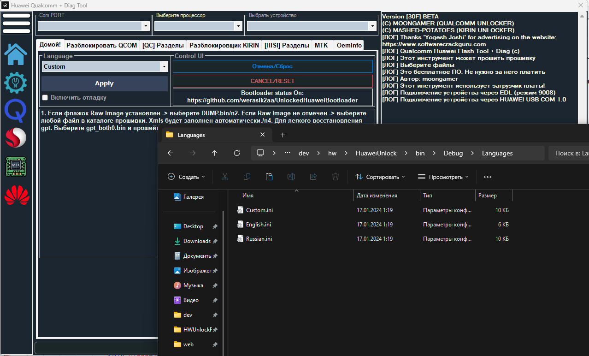

Huawei Unlock Tool (HUT)
Can work 100% on EMUI 9/8. With FBLOCK=Unlocked. On harmony os or newer version will not work, but you can try.
HUT - Huawei Unlock Tool
Developed to support unlocking functions for Qualcomm CPUs-based Huawei devices
Provides a convenient interface for Restoring/Backuping Huawei devices
This tool can Unlock KIRIN 970 | 960 | 955 | 950 | 935 | 925 | 810 | 710 | 65X | 620(CAM) | 620 | In Theory 980
Can work 100% on EMUI 9/8. With FBLOCK=Unlocked. On harmony os or newer version will not work, but you can try.
Features Huawei Unlock Tool

devices you can find on github
Unlock Tool
Here you can unlock your device. List of supporteddevices you can find on github

GPT Manager
Here you can write / read single partitions.

Oeminfo D/C Tools
You can Decompile or Compile Oeminfo.img.
